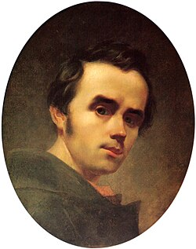
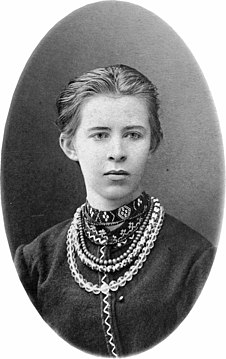
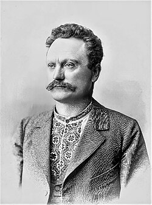
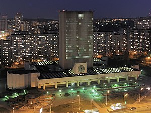

Українські Герої: Вічна Спадщина
Україна славиться своєю багатошаровою історією та багатим культурним надбанням. Відчуття гордості викликають визначні постаті, які не лише пройшли через випробування часу, але й залишили невід'ємний вклад у розвиток нації. У цій статті ми розглянемо кількох видатних українців, чия спадщина продовжує надихати та мотивувати.
Визначні українські постаті
Тарас Шевченко:
Тарас Шевченко - видатний український поет, художник і громадський діяч, чия творчість стала невід'ємною частиною національної ідентичності та культурного надбання України.
Ключові моменти його життя та діяльності:
- Біографічні дані: Тарас Шевченко народився 9 березня 1814 року в селі Моринці.
Дитинство та юність були сповнені тяжких праці та обмежень, але це не завадило йому розвивати свій талант і виправдати очікування від нього. - Літературна спадщина: Шевченко відомий своїми поетичними збірками, такими як " Кобзар", "Заповіт" та "Гайдамаки" , які стали символом боротьби за свободу та гідність українського народу.
Творчість відзначається глибокою емоційною силою, проникливістю та актуальністю. - Художня діяльність: Окрім поезії, Тарас Шевченко був видатним художником, чий талант виявився у створенні картин, акварелей та малюнків.
Роботи відзначаються реалістичним стилем та глибоким суспільним змістом. - Громадська діяльність: Шевченко був активним учасником громадського життя свого часу. Шевченко виступав за права селян та кріпаків, боровся за національну самостійність України та активно відстоював ідеали гуманізму та справедливості.
- Наслідок і вплив: Життя та творчість Тараса Шевченка стали невичерпним джерелом натхнення для наступних поколінь українців.
Його ідеали свободи, правди та гідності залишаються актуальними й надихають на боротьбу за краще майбутнє.
Тарас Шевченко - символ національної гідності та незламності, чия творчість здатна змінювати світ та надихати на великі справи.
Леся Українка:
Леся Українка - видатна українська поетеса, драматург, перекладачка та громадська діячка, її життя та творчість вражають своїм величчю та значущістю.
Ключові моменти її життя та діяльності:
- Біографічні дані: Леся Українка (справжнє ім'я - Лариса Петрівна Косач-Квітка) народилася 25 лютого 1871 року в селі Новоград-Волинський.
Народилася в родині відомого українського письменника Петра Косача-Квітки. - Літературна спадщина: Українка є автором численних поезій, драм, оповідань та літературних статей, які відзначаються глибоким філософським змістом та емоційною силою.
Її творчість пройнята любов'ю до рідної землі, вірою в справедливість та боротьбою за свободу. - Громадська діяльність: Поза літературною діяльністю, Леся Українка активно брала участь у громадському житті.
Підтримувала феміністичні та гуманістичні ідеали, боролася за права жінок та виступала проти соціальних нерівностей. - Культурний внесок: Леся Українка також відома своєю перекладацькою діяльністю, вона перекладала твори класиків світової літератури, що сприяло популяризації української культури серед інших народів.
- Наслідок і вплив: Сьогодні Леся Українка залишається не лише однією з найвидатніших фігур української літератури, але і символом боротьби за ідеали правди, краси та свободи. Її твори продовжують надихати та вражати серця читачів у всьому світі.
Леся Українка - це не тільки письменниця, але і героїня, чия сила та відданість ідеалам назавжди залишиться в серцях людей.
Іван Франко:
Іван Франко - видатний український письменник, громадський діяч, філософ і політичний діяч, який зробив неймовірний внесок у розвиток української культури та суспільства.
Ключові моменти його життя та діяльності:
- Біографічні дані: Іван Якович Франко народився 27 серпня 1856 року в селі Нагуєвичі, що на Львівщині. Він виріс у сім'ї селянина та був першим з шестеро дітей.
За своє життя він пройшов складний шлях від селянської сім'ї до визнаного у світі літератора та громадського діяча. - Літературна спадщина: Франко є автором безлічі творів у різних жанрах - від поезії та прози до драми та наукових праць.
Твори відзначаються глибиною думки, гостротою соціального усвідомлення та талантом до використання мовних засобів. - Громадська діяльність: Франко був активним учасником громадського життя свого часу.
Підтримував ідеї національної самосвідомості, боровся за права українського народу та активно сприяв розвитку освіти й культури. - Філософські погляди: Іван Франко був визначною постаттю української філософії.
Франко висловлював власні уявлення про суспільство, права людини, етику та мораль, залишаючи свої думки у творчих та наукових працях. - Наслідок і вплив: Сьогодні Іван Франко залишається не лише символом української культури та національної свідомості, але й джерелом натхнення для мільйонів українців.
Його ідеї та творчість продовжують впливати на сучасне суспільство та спонукають до думки й дії.
Іван Франко - письменник, мислитель, гуманіст і борець за справедливість, чий внесок у розвиток української культури та духовності залишається невичерпним джерелом натхнення.
Контекст життя та діяльності: історія, соціум і культура
Тарас Шевченко:
- Історичний контекст: Жив у період російської імперії, коли Україна перебувала під владою імперії і зазнавала культурного, економічного та політичного тиску.
- Соціальний контекст: Шевченко народився в селянській родині і сам довгий час працював на землі як кріпак. Був свідком соціальної нерівності, експлуатації селян та обмежень українського народу.
- Культурний контекст: Він був частиною культурного відродження України, де національна свідомість зміцнювалася через розвиток літератури, мистецтва та освіти.
Леся Українка:
- Історичний контекст: Жила в кінці 19 - початку 20 століття, коли Україна переживала складний період під владою російської імперії, а потім під Австро-Угорською монархією.
- Соціальний контекст: Українка була активною учасницею жіночих правозахисних рухів та соціальних реформ. Боролася за права жінок та висвітлювала проблеми соціальної справедливості.
- Культурний контекст: Українка відчувала необхідність в розвитку української мови, літератури та культури, щоб зміцнити національну ідентичність та відчуття гідності.
Іван Франко:
- Історичний контекст: Жив у період розквіту українського національного відродження пізнього 19 - початку 20 століття, коли українське суспільство боролося за свою самобутність та незалежність.
- Соціальний контекст: Франко був активним учасником робітничих та національно-визвольних рухів, боровся за права трудящих та пропагував ідеї соціальної справедливості.
- Культурний контекст: Він був важливою постаттю української літератури та культури, його твори відігравали значну роль у формуванні національної свідомості та утвердженні української мови.
Спадщина: актуальність і вплив на сучасне українське суспільство
- Боротьба за права та гідність: У творчості Шевченка, Українки та Франка прослідковується стійка боротьба за права людини та гідність нації.
Їхні поезії, драми та есеї підтримують ідеали справедливості, рівності та свободи, які залишаються актуальними й сьогодні. - Національна ідентичність: Творчість цих великих постатей сприяла формуванню української національної свідомості та ідентичності.
Їхні твори не лише відображали культурний дух та спадщину України, а й закликали до збереження української мови, традицій та цінностей. - Соціальна активність та громадянська позиція: Українські поети і письменники не лише створювали твори мистецтва, а й були активними учасниками громадського життя.
Їхні ідеї та громадянська позиція впливають на сучасну політичну, економічну та соціальну агенду в Україні. - Загальна людяність та гуманізм: Теми гуманізму, співчуття та милосердя, що присутні у творчості цих постатей, залишаються важливими й сьогодні.
Вони нагадують про необхідність розуміння, толерантності та підтримки один одного в складних ситуаціях. - Інтелектуальний розвиток та освіта: Франко, Українка та Шевченко були пропагандистами освіти та культури.
Сьогодні їхня роль у підвищенні рівня освіти та культурного розвитку важлива, оскільки вони надихають молоде покоління до здобуття знань та самовдосконалення.
Загалом, внесок Тараса Шевченка, Лесі Українки та Івана Франка українському суспільству надзвичайно великий і актуальний навіть у сучасних реаліях.
Їхні ідеали, цінності та принципи залишаються важливими орієнтирами для формування кращого майбутнього України.
Місця вшанування: музеї, пам'ятники, бібліотеки
Музеї
Музей Тараса Шевченка в Каневі: Розташований на території Каневського заповідника, цей музей присвячений життю і творчості Тараса Шевченка. Він містить різноманітні експозиції, артефакти та матеріали, пов'язані з великим українським поетом.

Музей Лесі Українки в Києві: Розташований у будинку, де жила і працювала Леся Українка, цей музей зберігає цінні експонати та документи, пов'язані з життям і творчістю поетеси.
Музей Івана Франка у Львові: Розташований на території Каневського заповідника, цей музей присвячений життю і творчості Тараса Шевченка. Він містить різноманітні експозиції, артефакти та матеріали, пов'язані з великим українським поетом.
Пам'ятник «Будителям»
Пам'ятник «Будителям» — єдиний в Україні пам'ятник-триптих Тарасу Шевченку, Лесі Українці та Івану Франку відкритий у Стрию 24 серпня 1995 року.
Пам'ятник складається з бронзових скульптур трьох поетів на повен зріст, у нішах кожної з арок, під загальною високою ажурною тригранною аркою з білого мармуру над цими трьома арками і декоративним вічовим дзвоном під нею, що символізує заклик до об'єднання нації.
Бібіліотеки
Багато бібліотек України зберігають рукописи, документи, листування та інші матеріали, пов'язані з життям та діяльністю цих постатей.
Найвідоміші з них:
-

Національна бібліотека України імені В.І. Вернадського -

Львівська національна наукова бібліотека імені В. Стефаника
Світове визнання та внесок Шевченка, Українки та Франка у світову культуру
Тарас Шевченко, Леся Українка та Іван Франко - були визнані не лише в Україні, а й за її межами завдяки своїй видатній творчості та впливовій громадянській діяльності. Вони зробили значний внесок у світову культуру, який визнали та відзначили національні та міжнародні спільноти.
Ось деякі аспекти їхнього визнання та внеску
- Поезія і література: Творчість Тараса Шевченка, Лесі Українки та Івана Франка визнана світовою спільнотою як видатний приклад української літератури. Їхні поетичні твори перекладені на багато мов світу і вивчаються як зразки високої літературної майстерності та глибокого соціального та філософського змісту.
- Публіцистика та ідеологія: Ідеї Шевченка, Українки та Франка про національну самостійність, права людини та соціальну справедливість були визнані в Україні та за її межами. Вони відіграли важливу роль у формуванні політичної свідомості та національної ідентичності не лише українців, а й інших народів, які борються за свої права та свободу.
- Мистецтво і культура: Тарас Шевченко також був видатним художником, чиї роботи отримали визнання в світі. Його картини та малюнки відзначаються майстерністю та глибоким емоційним змістом. Крім того, Леся Українка та Іван Франко внесли великий внесок у розвиток української драматургії, музики та інших галузей мистецтва.
- Міжнародне визнання: Роботи цих постатей були відзначені численними преміями та нагородами, які вони отримали як в Україні, так і за її межами. Їхні імена є вічно живими символами боротьби за свободу, гідність та правду, які впливають на світову свідомість та культуру.
В цілому, великі українські постаті Тарас Шевченко, Леся Українка та Іван Франко внесли незабутній внесок у світову культуру, визнання якого перейшло далеко за межі України.
Їхні ідеї, творчість та громадська діяльність залишаються важливими джерелами натхнення для людей у всьому світі.